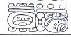
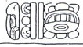
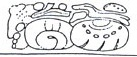
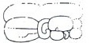
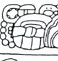
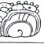
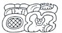

| A1 | Distance Number: [1?] K'ins, [15?] Winals | |
| B1 | Distance number continued: [1 Tuns?] [u]-to-ma | |
| A2 |  | Calendar Round: 12 Ahaw 8 Keh |
| B2 |  | i u 11 K'atun "the 11th K'atun" |
| C1 | Tzolk'in: [1?] Kawak | |
| D1 | Haab: 17 Muwan |
| C2 |  | Star-over-shell Dragon-Ha' "war befell Dragon Water" |
| D2a | u KAB'-hi "he caused it to be done" | |
| D2b | Yuknoom Ch'een | |
| E1a | [K'uhul] Kan [Ahaw] "Holy Lord of Calakmul" | |
| E1b | Lok'-yi "he escaped" | |
| F1 |  | [B'alah] Chan K'awiil |
| E2a |  | K'uhul Mutal Ahaw "Holy lord of Mutul" |
| E2b |  | t'ab-yi "he went up" |
| F2 |  | K'inich-Pa-a-Witz |